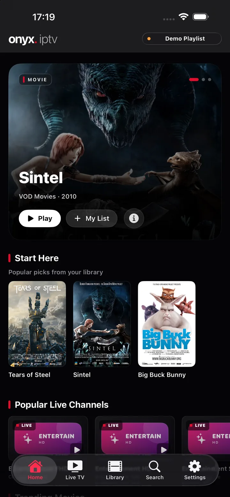
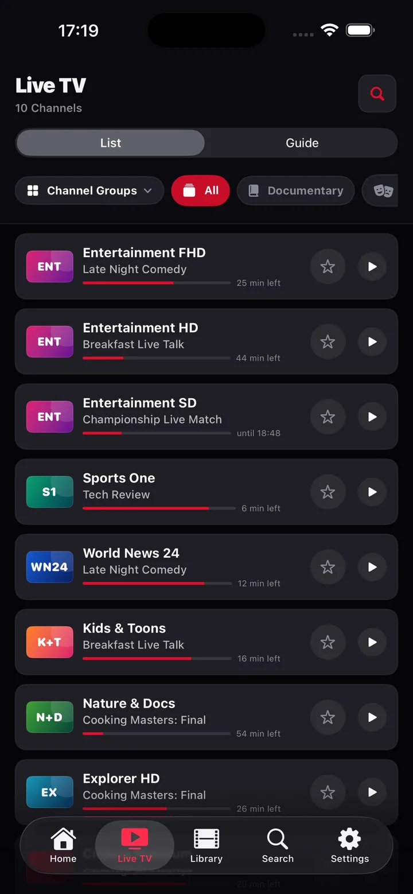
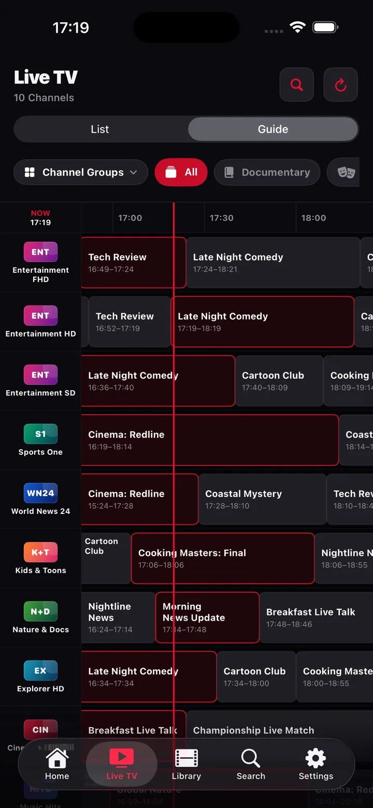
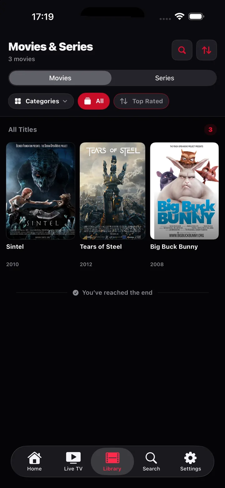
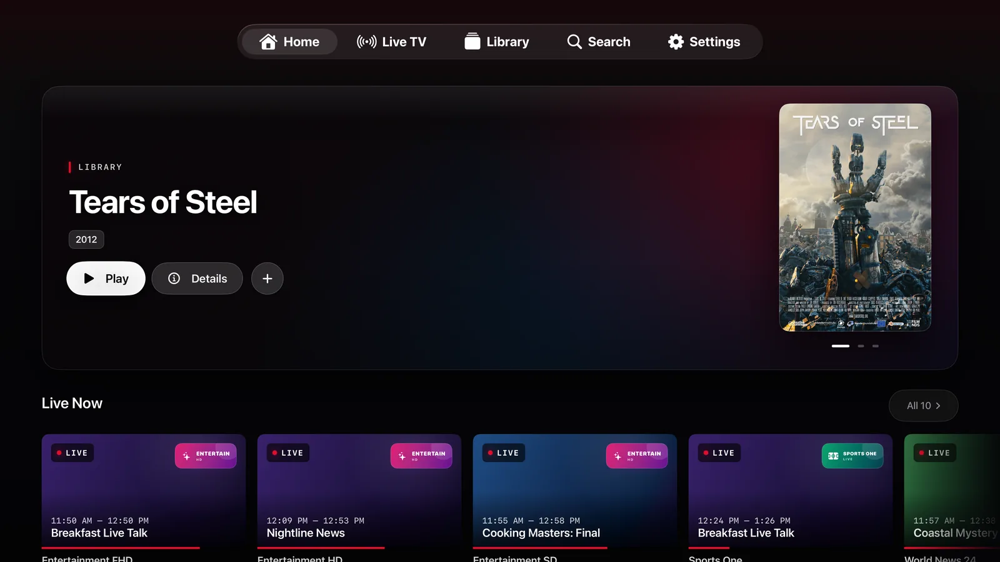
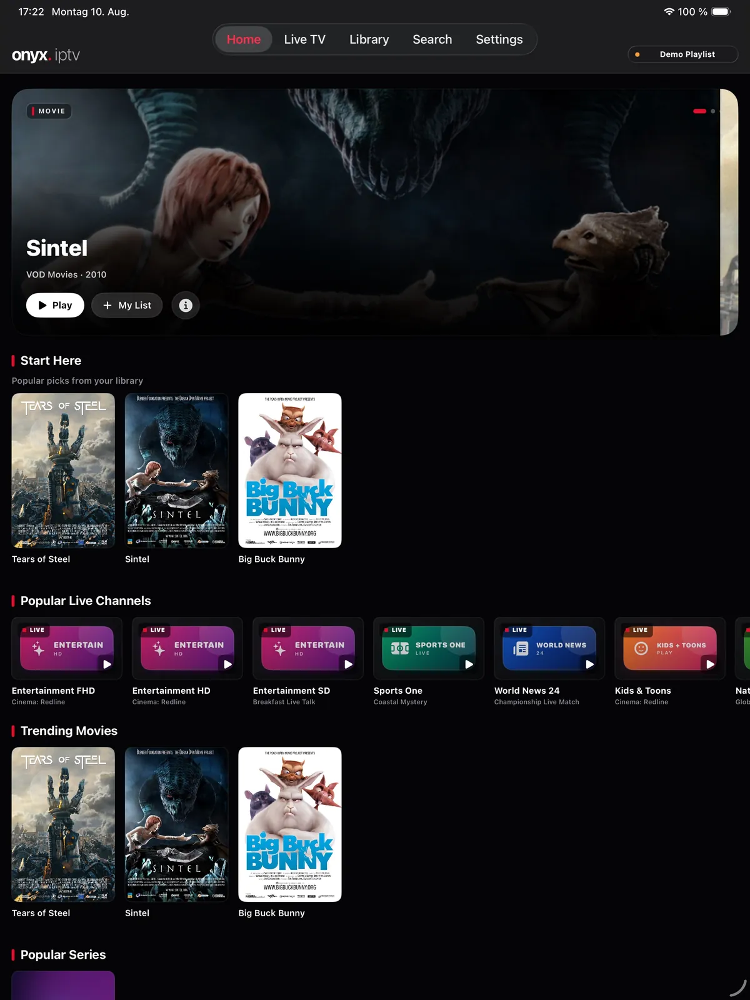
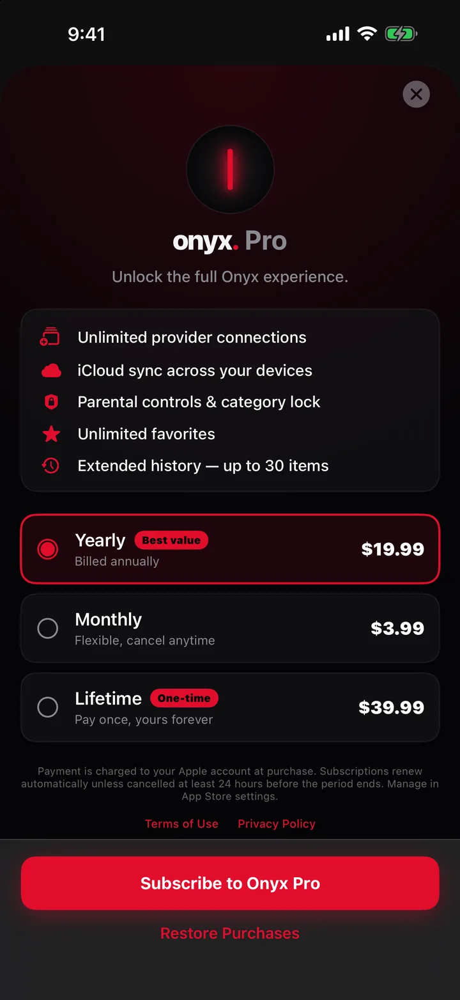
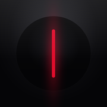

TV în direct care arată ce se difuzează
Fiecare rând de canal arată programul curent, o bară de progres în direct și timpul rămas. Marchează un favorit, filtrează după grup, iar lista ține minte.
Player IPTV pentru iPhone, iPad și Apple TV
Onyx este un player nativ pentru playlistul M3U sau contul Xtream pe care îl ai deja. TV în direct cu un ghid de programe adevărat, catch-up, filme și seriale. Rapid, privat și construit să se simtă acasă pe orice ecran Apple.
Vino cu propriul furnizor. Onyx IPTV nu furnizează, nu găzduiește și nu vinde canale sau conținut. Ești responsabil pentru sursele tale și pentru drepturile asupra a tot ce redai.




Un titlu cinematografic evidențiat, sugestii de început, „Continuă vizionarea” și canalele la care revii mereu. Tot ce oferă furnizorul tău, fără dezordine.
Fiecare rând de canal arată programul curent, o bară de progres în direct și minutele rămase. Favoritele sunt la o atingere, grupurile de canale la o glisare.
Ore înainte dintr-o glisare, o linie roșie a momentului curent, căutare după titlu în toate canalele și mementouri pentru ce urmează.
Afișe, sezoane și episoade, subiect, distribuție, durată și trailere. Onyx reia de unde ai rămas și redă singur episodul următor.
De ce Onyx
Onyx citește ce expune deja abonamentul tău IPTV și îl transformă într-o aplicație care pare făcută pentru iOS.
Fiecare rând de canal arată programul curent, o bară de progres în direct și timpul rămas. Marchează un favorit, filtrează după grup, iar lista ține minte.
O grilă de ghid TV adevărată cu linia momentului curent, ore înainte dintr-o glisare, căutare în toate canalele și mementouri pentru programele viitoare.
Revezi programele încheiate din arhiva furnizorului sau reia de la început o emisiune în curs.
Afișe, categorii, sezoane și episoade, subiect, distribuție și trailere. Cu „Continuă vizionarea” și episodul următor automat.
AVPlayer nativ pentru viteză și baterie, cu un motor VLC de rezervă pentru containerele pe care iOS nu le decodează.
Fără cont, fără SDK de analiză, fără urmărire. Datele de acces rămân în Keychain-ul iOS de pe dispozitivul tău. Sincronizarea iCloud opțională rămâne în propriul tău iCloud.
Șaisprezece limbi de interfață și aspect de la dreapta la stânga pentru arabă. Ghidul tău, setările tale, cuvintele tale.
iPhone, iPad & Apple TV
Construită în SwiftUI pentru fiecare platformă: o aplicație tactilă pe iPhone și iPad și o aplicație Apple TV bazată pe focus, care îți partajează favoritele, istoricul și abonamentul Onyx Pro.


Aplicația Apple TV este o descărcare separată din aceeași pagină App Store și partajează abonamentul Onyx Pro.
Două minute până la primul canal
Onyx recunoaște linkurile M3U, precum și URL-urile Xtream get.php și player_api, și configurează contul pentru tine. Vrei să arunci o privire mai întâi? Playlistul demo nu are nevoie de niciun furnizor.
Un URL de playlist M3U sau un cont Xtream. Lipește linkul trimis de furnizor și Onyx completează serverul, numele de utilizator și parola.
Canale sortate pe grupuri, filme și seriale așezate separat, ghidul încărcat de la furnizor sau dintr-o sursă XMLTV.
Atinge un canal, marchează favoritele, setează mementouri. Catch-up apare singur oriunde furnizorul păstrează o arhivă.
O conexiune la furnizor, tot ghidul, catch-up și biblioteca sunt gratuite. Pro adaugă ce cer cei cu mai multe conturi sau o familie.
Abonamentele se reînnoiesc automat și se facturează prin contul tău Apple. Anulează oricând din setările App Store. Prețurile pentru regiunea ta sunt afișate în aplicație.

Bine de știut
Nu. Onyx IPTV este doar un player. Nu furnizează, nu găzduiește și nu vinde canale, filme sau seriale. Adaugi playlistul M3U sau contul Xtream de la propriul furnizor IPTV și ești responsabil pentru drepturile asupra conținutului redat.
Playlisturi M3U și M3U8 prin URL și conturi API Xtream Codes (URL server, nume de utilizator, parolă). Poți lipi și un link get.php sau player_api, iar Onyx configurează contul pentru tine. Datele EPG se încarcă de la furnizor sau dintr-o sursă XMLTV.
Da. Playlistul demo integrat folosește fluxuri de test publice și nu are nevoie de cont, ca să explorezi mai întâi toată interfața.
Aplicația este gratuită cu o conexiune la furnizor. Onyx Pro este un abonament lunar sau anual opțional. Adaugă conexiuni nelimitate, sincronizare iCloud, control parental, grupare după calitate, imagine în imagine, AirPlay și copii offline.
Nu. Nu există cont, SDK de analiză sau urmărire. Datele de acces rămân în Keychain-ul iOS de pe dispozitivul tău, iar sincronizarea iCloud opțională folosește propriul tău cont iCloud. Vezi politica de confidențialitate.
Verifică dacă același flux merge în playerul recomandat de furnizor, dacă URL-ul serverului, numele de utilizator și parola nu conțin spații în plus și dacă furnizorul nu a atins limita de fluxuri simultane. Ghidul de configurare are mai multe detalii.
Descărcare gratuită. Încearcă mai întâi playlistul demo, adaugă furnizorul când ești gata.
